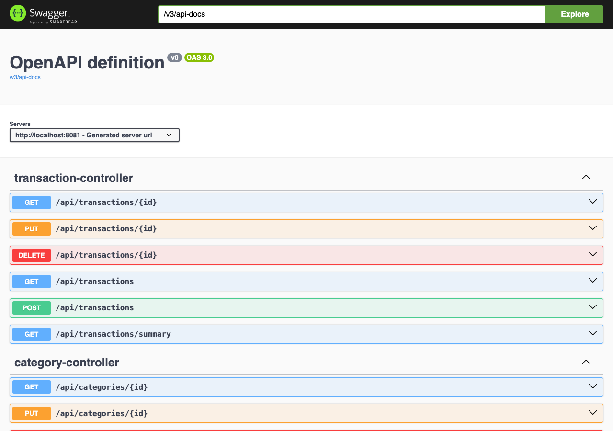

GestionAp PRO
Proyecto insigniaApp de escritorio para gestionar el alquiler de habitaciones. Java 21, JavaFX, MySQL y JDBC en capas, PDF con iText, BCrypt y 189 tests con JUnit 5.
Desarrollador Java Junior
Disponible para prácticas desde feb. 2027
Programo en Java y Spring Boot, y antes de escribir código pasé 6 años coordinando rutas, stock y KPIs en España y Australia. Estudiante de DAM y del Máster en Data & Analytics en Prometeo by thePower, con la vista puesta en banca y consultoría tecnológica.
public class NelsonGomez {
private String rol = "Java Junior";
private String[] stack = {
"Java", "Spring Boot", "Python", "SQL"
};
private String meta = "Banca y consultoría";
public static void main(String[] args) {
System.out.println("Listo para aportar");
}
}
> Listo para aportar
Programo en Java y Spring Boot, y antes de escribir código pasé 6 años coordinando rutas, stock y KPIs en España y Australia.
Estudio 2.º del CFGS de Desarrollo de Aplicaciones Multiplataforma (DAM) y el Máster en Data & Analytics en Prometeo by thePower. Antes me formé en Comercio Exterior (Máster, Cámara de Comercio de Madrid y Universidad Rey Juan Carlos) y en Transporte y Logística (CFGS).
En TGF coordiné entre 80 y 100 rutas diarias para El Corte Inglés, monté desde cero el departamento logístico de la cuenta MediaMarkt y fui el único responsable del área durante 4 meses. De ahí saco dos costumbres: entender el proceso antes de tocar el código y cerrar los problemas en vez de pasárselos al siguiente.
Actualmente vivo en Australia, donde compagino mi formación en desarrollo con experiencia en operaciones: primero en CEVA Logistics (Brisbane) y ahora en Civeo, en un campamento minero de Queensland, donde me han promocionado a gestionar el aprovisionamiento y el almacén. Viajar y trabajar fuera me ha enseñado a adaptarme rápido, a trabajar en inglés con equipos multiculturales y a afrontar retos nuevos con autonomía.
Promocionado en febrero de 2026 a la gestión de aprovisionamiento y almacén de un campamento minero remoto de unos 3.500 residentes, en una operativa 24/7 en inglés: control de stock, inventario y reposición con Excel y SAP, recepción de mercancía y coordinación con proveedores.
Operativa diaria de instalaciones en Coppabella Village, alojamiento para trabajadores del sector minero en el Bowen Basin: mantenimiento de zonas comunes y habitaciones, resolución de incidencias y trabajo en equipo multicultural en inglés.
Gestión end-to-end del ciclo completo de importación internacional (marítima y terrestre): revisión documental (factura comercial, packing list, B/L), despachos aduaneros y coordinación con transitarios y navieras.
Monté desde cero el departamento logístico de la cuenta MediaMarkt: diseño de rutas, estructura operativa y planificación diaria. Gestión diaria de unos 30 conductores y entre 20 y 30 rutas, con optimización de recorridos, turnos y cargas de trabajo.
Coordinación de entre 80 y 100 rutas diarias y asignación de conductores y flota, como punto de contacto con el cliente. Seguimiento de KPIs de servicio y gestión de incidencias. Único responsable del departamento durante 4 meses (nov. 2023 – feb. 2024).
Apoyo en planificación de rutas y seguimiento de entregas para la cuenta de El Corte Inglés. Al terminar, me incorporaron a plantilla.
Coordinación del aprovisionamiento de piezas para producción de equipos de diagnóstico médico: recepción, control de inventario y coordinación con proveedores.
Operaciones de almacén y supply chain en un centro de fulfillment de alto volumen: preparación de pedidos, inventarios cíclicos, control de stock y reposición con objetivos de productividad y SLAs.
Aprendizaje activo, no dominio todavía. Prefiero ser honesto sobre dónde estoy en cada tecnología.
App de escritorio para gestionar el alquiler de habitaciones. Java 21, JavaFX, MySQL y JDBC en capas, PDF con iText, BCrypt y 189 tests con JUnit 5.
Web para un local de comida callejera dominicana en Cuatro Caminos (Madrid): carta interactiva con carrito de pedido (listo para WhatsApp), horario en vivo, ES / EN e instalable como PWA. Lighthouse 100.

API REST de finanzas personales con Java 17 y Spring Boot 3: ingresos, gastos y resumen mensual por categoría. Tests con JUnit 5, Mockito y MockMvc.
API REST con Spring Boot 3.5, Spring Security y JWT por roles, PDF de contratos y app SwiftUI. 83 tests con JUnit 5 y MockMvc.
API REST con Java 17 y Spring Boot 3 para gestionar habitaciones, inquilinos y contratos. Arquitectura en capas, Spring Data JPA, validación y errores JSON.
Proyectos del Máster en Data & Analytics.
Consultas SQL sobre la base de datos demo de Postgres Pro, la de reservas de vuelos.
Ver repositorioAPI de películas con Express y MongoDB (Mongoose), con el CRUD completo.
Ver repositorio40 katas de Python: listas, diccionarios, tuplas y sets, lambdas, una función recursiva y manejo de excepciones.
Ver repositorio56 ejercicios resueltos de JavaScript, de los fundamentos a la asincronía y el DOM.
Ver repositorioPrometeo by thePower
En curso · 2025 – 2027Prometeo by thePower, Madrid
En curso · 2.º curso · 2025 – 2027Cámara de Comercio de Madrid & Universidad Rey Juan Carlos
Completado · 2023 – 2024Escuela Profesional Javeriana
Completado · 2020 – 2022Busco prácticas de Formación en Empresa en desarrollo de software o datos a partir de febrero de 2027. Si tienes una oportunidad o simplemente quieres conectar, escríbeme.